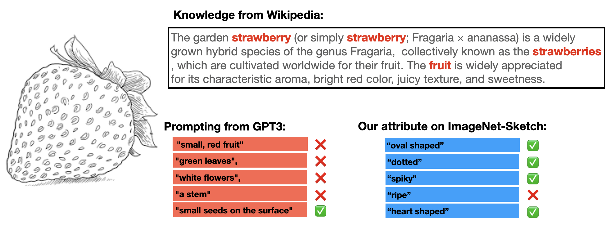
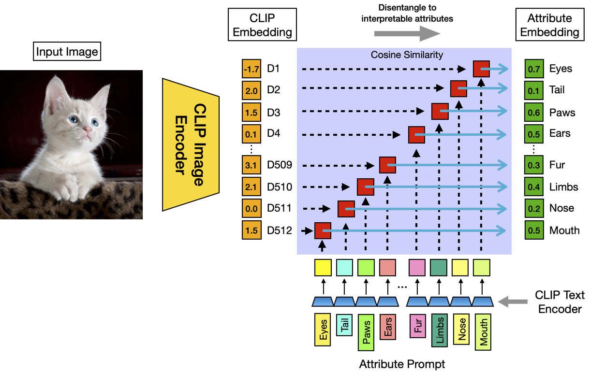
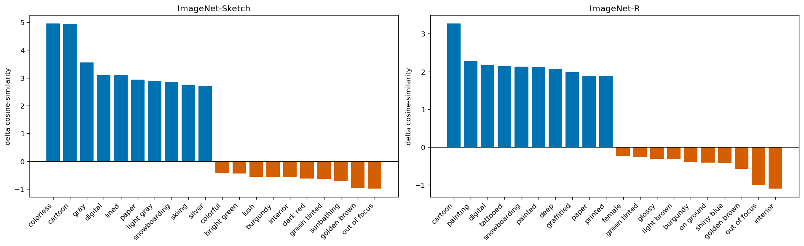
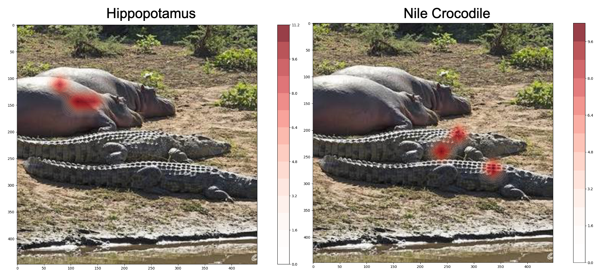
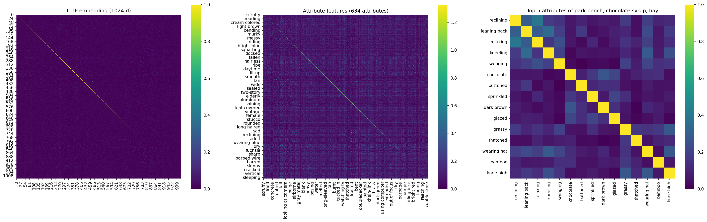

Carnegie Mellon University
ECCV 2026 Workshops

A popular route to interpretable zero-shot classification asks a large language model (LLM) to describe each class name and prompts CLIP with the resulting descriptors. We show that these descriptors carry little visual evidence of their own: removing the class name from the prompt collapses ImageNet accuracy from 59.5% to 15.5%. The diagnosis is that the descriptors are conditioned on the label rather than on the images, so they describe the concept in general and mislead exactly when the data shifts. We therefore select attributes from the target image collection instead: we score a large attribute pool against the images in CLIP's joint embedding space and keep the top-scoring attributes per class. Selected this way, class-name-free attribute prompts reach 23.8% on ImageNet (against 15.5% for LLM descriptors), the gain holds on four shifted ImageNet variants, and reselecting from the LLM's own pool isolates the selection mechanism as the cause. With one image per class, the selected attributes outperform the prompt-tuning method CoOp by 3 points while fitting in under a minute instead of 14 hours. Because the attribute set is chosen by the data, it doubles as a readable summary of a dataset, which we use to describe distribution shift in words.
The standard descriptor protocol prompts CLIP with “{class name}, which is {descriptor}”. If the descriptors measured attribute evidence in the image, they should retain accuracy when queried alone. They do not: reduced to bare descriptors, accuracy collapses. Reselecting attributes from the same pool using images recovers much of the loss, so the selection mechanism, not the vocabulary, is what makes attributes informative.
| Prompt (no class name) | ImageNet | -V2 | -Sketch | -A | -R |
|---|---|---|---|---|---|
| LLM descriptors (Menon & Vondrick) | 15.50 | 14.00 | 9.60 | 8.57 | 17.91 |
| AttributeSelect, same descriptor pool (top 5) | 19.40 | 17.00 | 10.57 | 9.80 | 19.49 |
| AttributeSelect, VAW+LSA pool (top 5) | 23.80 | 20.80 | 14.40 | 11.83 | 28.20 |
Class-name-free zero-shot top-1 accuracy, CLIP-RN50; attributes selected on ImageNet only. With the class name kept, the same LLM descriptors score 59.47 on ImageNet.

Attributes are encoded bare, with no template and no class name, since a shared class name would correlate all of a class's attribute scores: exactly the confound above. A test image is assigned to the class whose selected attributes it matches best, optionally weighting each attribute's vote by its selection score.
Selection only has to rank a fixed pool of meaningful words, so one image per class carries enough signal: AttributeSelect beats prompt tuning at 1–4 shots at a thousandth of the fitting cost, and the fitted object is a readable word list rather than a soft prompt. Beyond 4 shots, gradient methods pass it; the probe only ranks the pool, so extra images refine the ranking but add no capacity.
| Method | 1-shot | 2-shot | 4-shot | 8-shot | 16-shot | Fit time |
|---|---|---|---|---|---|---|
| CLIP linear probe | 24.46 | 35.09 | 44.60 | 52.31 | 57.10 | <1 min |
| CoOp | 57.15 | 57.81 | 59.99 | 61.56 | 62.95 | 14 hr |
| WiSE-FT | 58.30 | 59.08 | 60.48 | 61.85 | 62.84 | <1 min |
| AttributeSelect (ours) | 60.13 | 60.92 | 61.13 | 61.39 | 61.35 | <1 min |
ImageNet top-1 accuracy, CLIP-RN50; zero-shot CLIP scores 55.31. Bold marks the best method per column.
Because the attribute set is a function of an image collection, any collection can be summarized in words. Subtracting the mean attribute profile of ImageNet from a shifted dataset's ranks the attributes that rose and fell, using unlabeled images only. The description is actionable: turning the top domain attributes into prompt templates (“A cartoon photo of a {class}”) improves zero-shot accuracy on the shifted variants by up to 4 points.



@inproceedings{gare2026attributes,
title = {Attributes Should Come from Images, Not Class Names:
Distribution-Conditioned Attribute Selection for Vision-Language Models},
author = {Gare, Gautam Rajendrakumar and Shi, Jia and Lin, Zhiqiu and
Pathak, Deepak and Galeotti, John and Ramanan, Deva},
booktitle = {ECCV Workshops},
year = {2026}
}
Page template inspired by DetPO and academic project-page conventions.